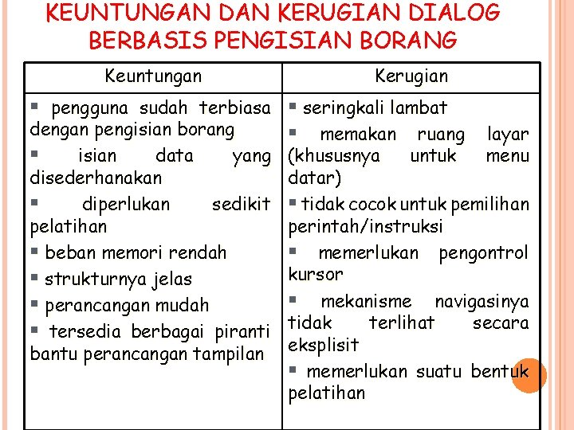

7.2.4 Keuntungan dan Kerugian
salah satub keuntungan paling nyata dari pengguna dialog berbasis pengisian borang adalah bahwa hampir semua di antara kita sudah terbiasa melakukan pengisian borang. Dengan demikian persoalannya adalah perlu ada suatu usaha untuk membiasakan diri dari pengisian borang kertas, yang tidak banyak variasinya, menjadi pengisian borang pada layar komputer yang lebih banyak variasi medan isian datanya.

Pada dasarnya kebanyakan pengguna paham dengan konsep pengisian borang. Hal ini membawa keuntungan tersendiri bahwa diallog pengisian borang dapat dengan mudah dioperasikan oleh kebanyakan pengguna. Ragam interaksi ini sangat cocok untuk kegiatan pemasukan data dan kurang cocok untuk pemilihan pmerintahan. Tetapi dengan kelebihan masing masing ragam dialog berbasis pengisian borang dan pemilihan pemerintah dapat dikombinasikan terutama ketika dua jenis interaksi yang diperlukan dengan layar tampilan yang sama. Secara garis besar, kualitas dialog berbasis pengisian borang bergantung pada berorganisasi, penyajian, dan isi informasi yang disediakan dalam borang. Medan-medan isian harus disusun secara logis. label medan isian harus dibuat seringkas mungkin tatapi cukup informatif dan tidak rancu.